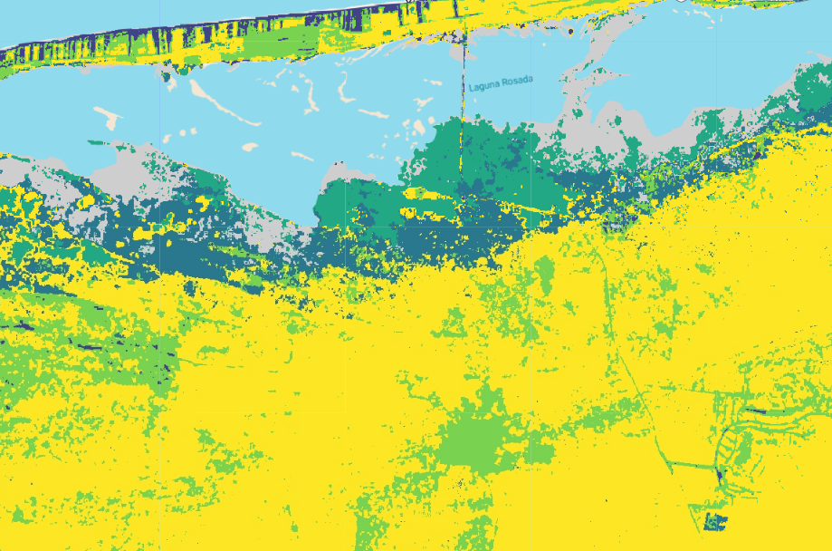
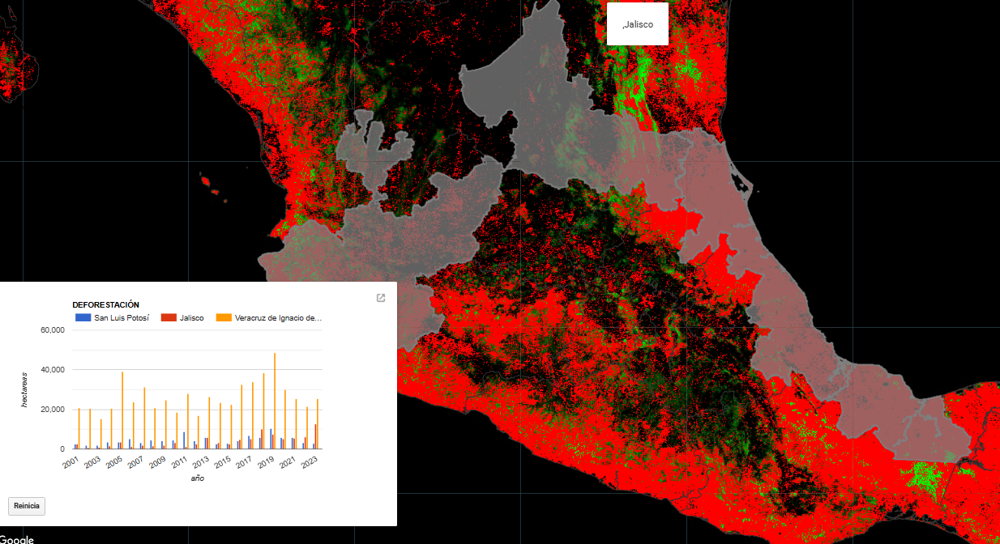
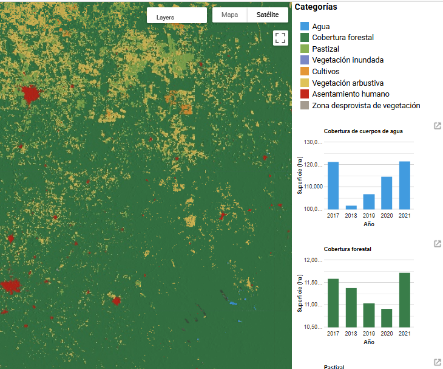
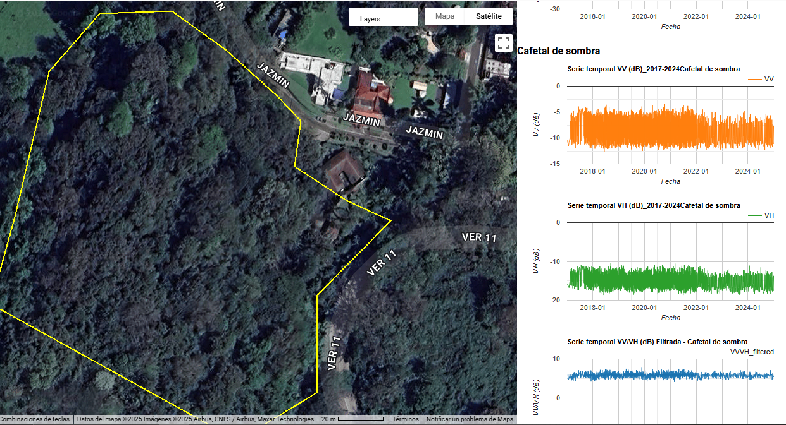
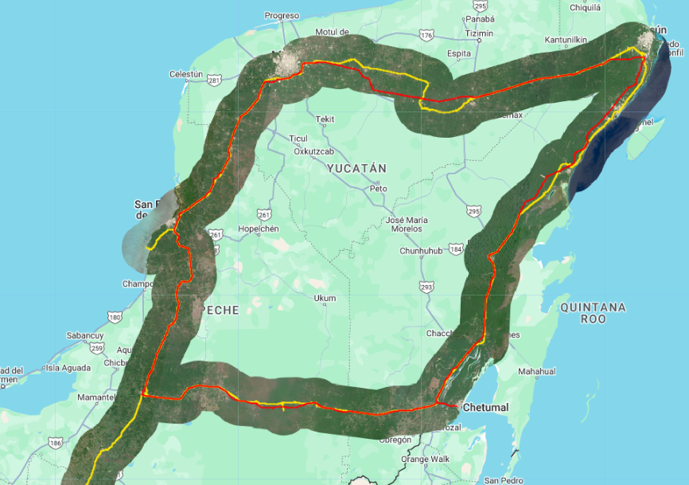
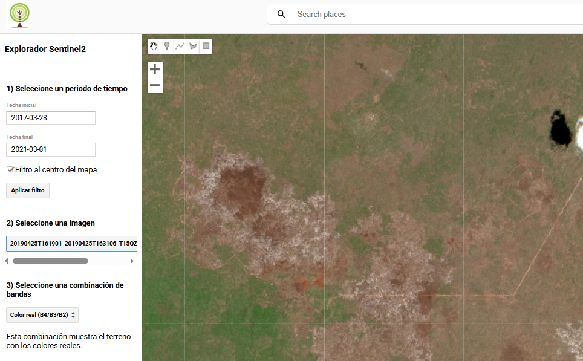
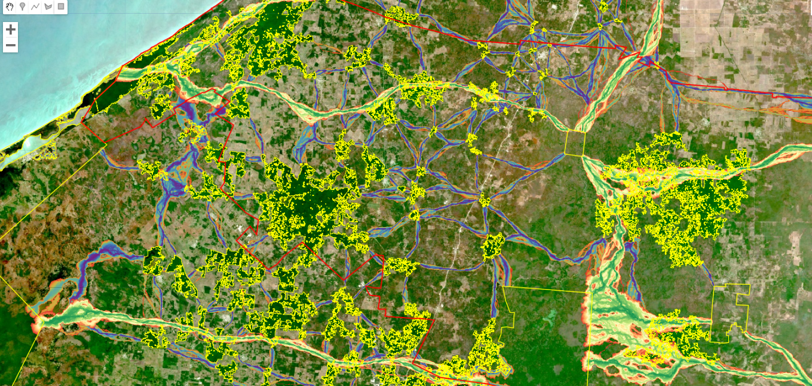
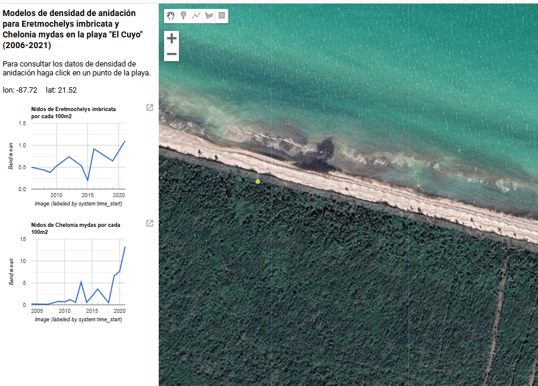
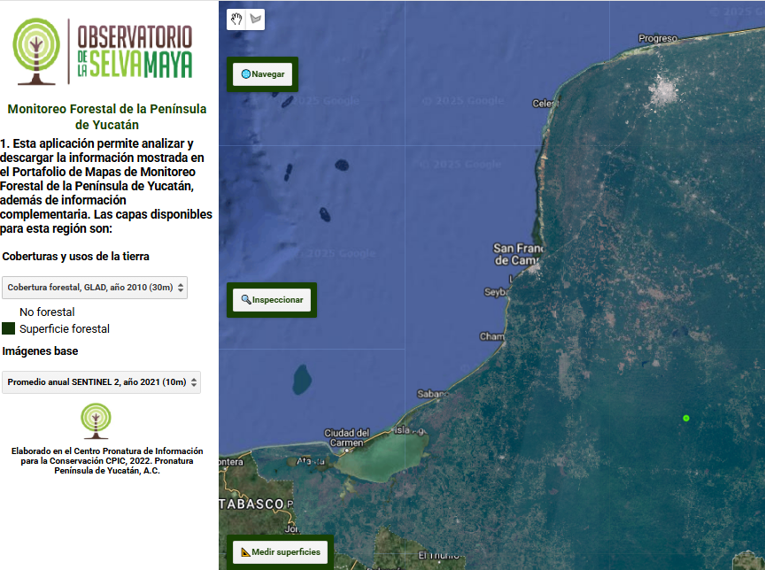
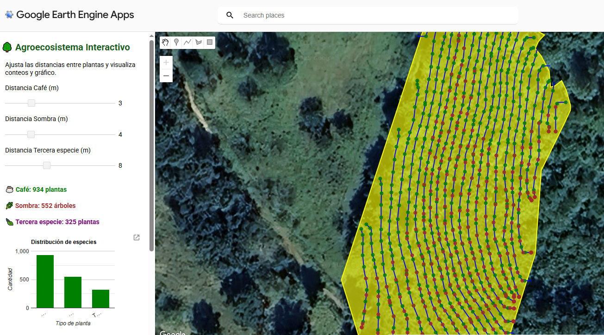

Rigor técnico
Metodologías reproducibles, trazabilidad de datos y resultados espacialmente verificables.
En el Centro Holístico de Estudios Territoriales articulamos análisis geoespacial, cartografía, percepción remota, gestión socioambiental y comunicación territorial para comprender procesos complejos y construir soluciones aplicables.
Quiénes somos
El Centro Holístico de Estudios Territoriales (CHET) es un espacio de colaboración orientado al análisis aplicado de los territorios y sus dinámicas ambientales, sociales y productivas.
Nuestro trabajo busca fortalecer procesos de planeación, conservación, monitoreo, restauración, ordenamiento ecológico y gestión territorial mediante productos cartográficos, análisis geoespaciales, plataformas interactivas e insumos técnicos accesibles para instituciones, organizaciones, comunidades y proyectos de investigación.
Metodologías reproducibles, trazabilidad de datos y resultados espacialmente verificables.
Comprensión de los vínculos entre paisaje, biodiversidad, actividades humanas y gobernanza.
Productos diseñados para apoyar procesos reales de decisión, monitoreo y comunicación.
Líneas de trabajo
Las líneas de trabajo pueden articularse en proyectos integrales o desarrollarse como productos específicos.
Integración de bases geoespaciales, diseño de geodatabases, homologación cartográfica, análisis espacial y elaboración de mapas técnicos.
Procesamiento de imágenes Sentinel, Landsat, drones y modelos de elevación para monitoreo ambiental, agroecosistemas y cambios de cobertura.
Modelado de resistencia, corredores funcionales, priorización espacial y análisis del paisaje para conservación y restauración.
Apoyo técnico para ordenamiento ecológico, programas de manejo, subzonificación, diagnósticos territoriales y evaluación multicriterio.
Indicadores espaciales y temporales para seguimiento de deforestación, incendios, biodiversidad, agua, ecosistemas costeros y sistemas productivos.
Desarrollo de visores web, tableros, StoryMaps y productos cartográficos para facilitar la consulta, interpretación y divulgación de información territorial.
Portafolio
Selección de aplicaciones interactivas, ejercicios de análisis geoespacial y documentos técnicos de referencia.

Cobertura y uso del suelo
Visualización de coberturas para los años 2019 y 2023 en la Región Norte de Yucatán, orientada al análisis comparativo de cambios territoriales.

Monitoreo forestal
Consulta de pérdidas de cobertura forestal en México para el periodo 2001–2023, útil para identificar patrones de cambio y áreas de atención.

Cambio de cobertura
Herramienta para explorar cambios de cobertura entre 2017 y 2021 mediante análisis geoespacial y visualización temática.

Agroecosistemas y radar
Aplicación de imágenes de radar para explorar patrones territoriales y apoyar el monitoreo de agroecosistemas del trópico húmedo.

Fotointerpretación
Consulta de productos de cartografía base y temática derivados de interpretación visual, análisis espacial e integración de información territorial.

Series de tiempo
Plataforma para la consulta y visualización de imágenes Sentinel-2, composiciones espectrales y series de tiempo.

Conservación y paisaje
Análisis de corredores de menor costo energético para el movimiento de especies, aplicado al estudio de conectividad del jaguar (Panthera onca).

Distribución de especies
Visualización de densidad de población de Eretmochelys imbricata en zonas costeras y apoyo a la interpretación de áreas de importancia ecológica.

Monitoreo forestal
Herramienta para explorar imágenes Sentinel-2, Landsat y MODIS con fines de monitoreo forestal y análisis territorial.

Diseño de agroecosistemas
Visualización territorial orientada al uso de información topográfica y análisis espacial para el diseño de estrategias agroecológicas.
Referencia externa
Documento de consulta sobre procesos ambientales y territoriales vinculados con la región de Los Tuxtlas y su zona costera.
Planeación territorial
Documento técnico de referencia para la caracterización territorial del Programa de Ordenamiento Ecológico Regional de Xalapa.
Conectividad y paisaje
Estudio técnico de referencia sobre el corredor Balam-Béh, útil para el análisis de conectividad, conservación y planeación territorial en Campeche.
Evaluación ambiental
Documento de consulta relacionado con un proyecto de parque ecológico en Chicxulub y sus componentes ambientales y territoriales.
StoryMap
Recurso interactivo de consulta para explorar información territorial y ambiental asociada con ecosistemas costeros.
Visor temático
Visor de consulta externa con información espacial relacionada con el manatí y su contexto territorial.
Visor temático
Plataforma externa de consulta territorial incorporada como referencia para el análisis y comunicación de información geoespacial.
Dashboard
Tablero territorial de consulta externa para el seguimiento y visualización de información relacionada con incendios.
Atlas territorial
Plataforma externa de consulta cartográfica para explorar información temática y territorial mediante un atlas interactivo.
Equipo
El trabajo del Centro se fortalece mediante una visión interdisciplinaria y colaborativa.
Licenciado en Geografía · Maestro en Ciencias en Agroecosistemas Tropicales
Especialista en sistemas de información geográfica, percepción remota, análisis espacial, monitoreo territorial, cartografía aplicada y desarrollo de visores geoespaciales.
Maestra en Ciencias
Integrante del Centro con participación en procesos de análisis territorial, gestión socioambiental, integración de información y fortalecimiento de proyectos interdisciplinarios.
Licenciado
Integrante del Centro con apoyo en la organización, gestión, integración y comunicación de productos e información territorial.
Colaboraciones y proyectos
CHET colabora en proyectos de investigación, conservación, planeación territorial, monitoreo ambiental, producción cartográfica y desarrollo de plataformas geoespaciales.